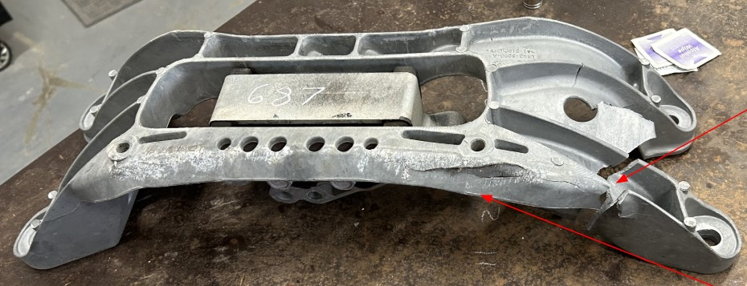

Failure Analysis: Police Interceptor Transmission Mount
Root cause investigation using microscopy, SEM/EDS, hardness, and FEA
Type: Failure analysis case study · fracture mechanics + materials characterization · engineering judgment

TL;DR (for hiring managers)
- Investigated a fractured transmission mount from a 2021 Ford Explorer Police Interceptor (AWD)
- Mapped fracture surfaces and identified a likely impact site + brittle chevrons
- Located a ~1 mm pore at the origin with cracks emanating (casting porosity)
- SEM showed brittle fast fracture; no fatigue striations observed
- FEA + fracture mechanics showed impact loading could drive crack propagation (likely 5–10 mph Δv range)
Why this matters
This project shows end-to-end reliability thinking: evidence collection → hypothesis elimination →
material verification → micromechanism identification → stress modeling → actionable recommendations.
Vehicle @ 33,249 miles
Failure discovered during routine maintenance
Material: A380 (Al-Si8Cu3Fe)
Die-cast alloy; porosity common defect mode
Mode: brittle fast fracture
Fatigue ruled out via fractography